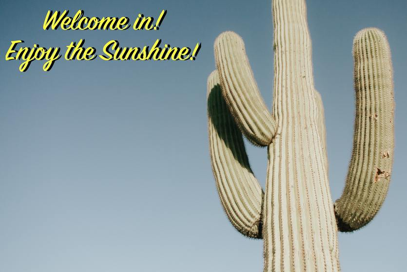
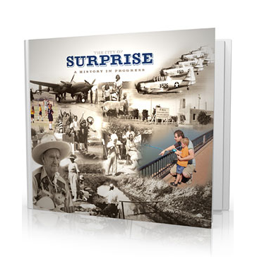

The Great city of Surprise is the10th largest city in Arizona with 110 incorporated square miles. It is located just 45 minutes from the Downtown Phoenix area and Sky Harbor International Airport. As of a 2019 estimate, the population of Surprise is 141,664 residents.
Desert Life is Good
For sports people, Surprise is home to the largest tennis and racquet complex,
golf course, and lake fishing centers.
In addition, each spring, our population explodes when we welcome the Kansas
City Royals and Texas Rangers during the Cactus League Spring Training! Voted
2018’s Number 1 Spring Training Stadium in Arizona by USA Today, Surprise Stadium
offers the ultimate baseball fan experience complete with up-close and personal
interactions with your favorite major leaguers!
Not a sports fan? Surprise is surrounded by the White Tank Mountain range. Maybe
you feel like going on a day hike through some of the many hiking and running
trails. Check out some here on the AllTrails.com website.
Our History: Why Is It Called “Surprise”?
Surprise was founded in 1938 by Flora Mae Statler. It was only one square mile of farmland. Flora’s daughter, once heard her mother comment that:
“I would be surprised if this town ever amounted to much.”
We who know the history of Surprise, believe that Flora would be surprised! They original one square mile still exists and is called “The Original Townsite”.
Check out the book "The City of Surprise: A History in Progress". This 104-page book is full of photos and stories and comes with a DVD documentary. Purchase at Surprise History Project or watch the video here
Meet the Government
Mayor
Skip Hall
District 1
Roland F. Winter Jr
District 2
Aly Cline
District 3 and Vice Mayor
Patrick Duffy
Distric 4
Ken Remeley
Distrcit 5
Jack Hastings
Distrcit 6
Chris Judd